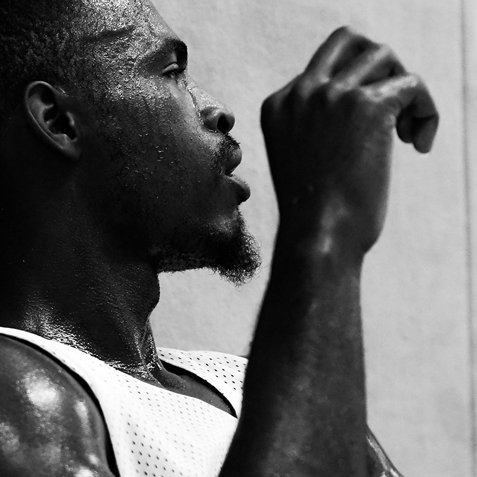
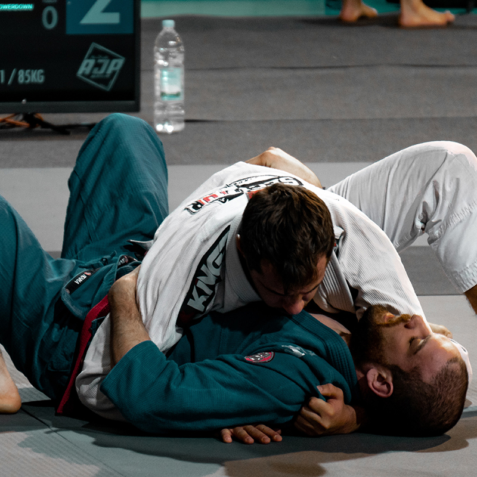
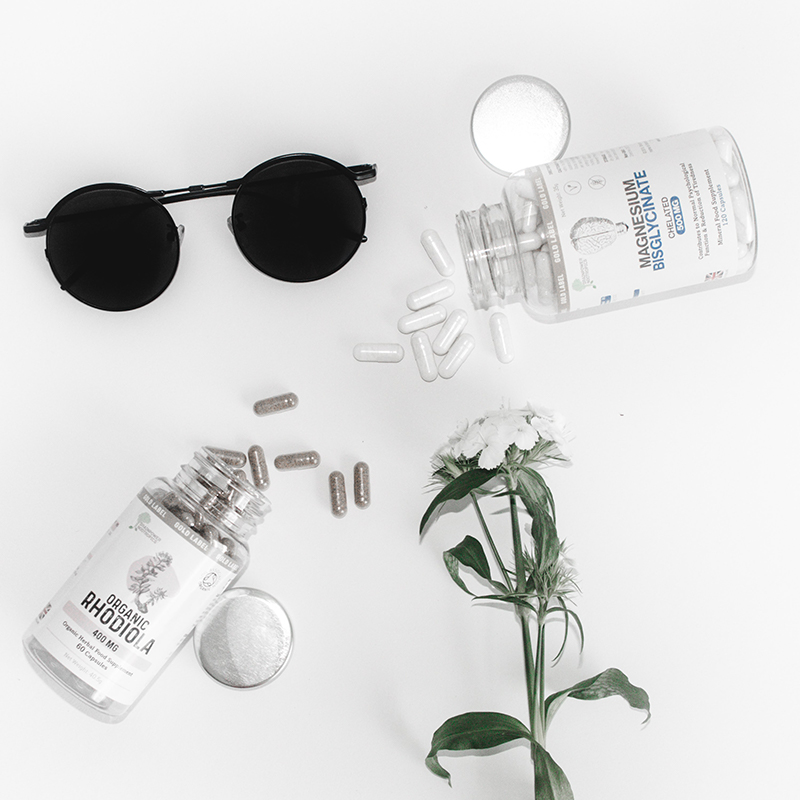
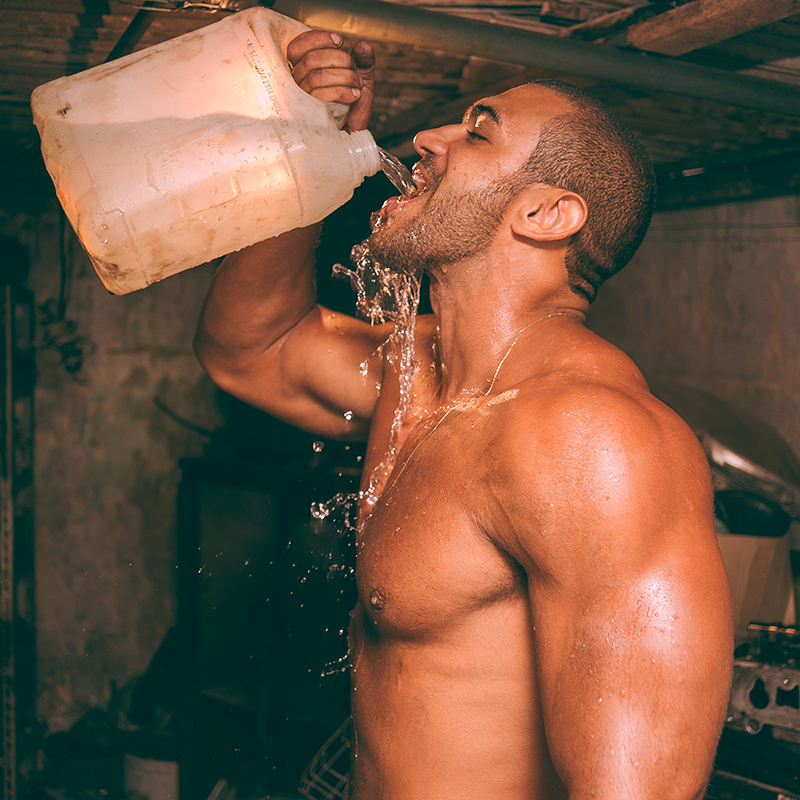

Disclaimer: I am not a medical professional. Dehydration is dangerous, and so is fighting. Don't engage in either of them. All practices described herein are purely hypothetical and illustrative, and should you choose to act them out, you should do so under the supervision of a medical professional.
Should it be absolutely necessary that you dehydrate yourself, the following guidelines are aimed at helping you spend as little time as possible in a dehydrated state, and getting you to the lowest possible bodyweight with the least amount of struggle and physical effort. This will help you maintain optimal athletic performance in your competition.
There is also an entire section on rehydrating, which is just as important as how you cut the weight. If you don't rehydrate properly, you will perform poorly.
It should also be noted that all of these guidelines are assuming that your weigh-ins take place the day before your competiton, and that you have roughly a 24 hour period to rehydrate. If this isn't the case, you can still utilize these principles, but to a lesser extent. Use common sense and don't sacrifice performance in order to achieve a certain weight class.
How Much Can I Lose?
What can reasonably be lost through water weight manipulation is about 10% of your total bodyweight. Your body has many ways of maintaining balance between fluids and electrolytes, and if you want to do this as painlessly as possible, you should know about the ways that your body will try to hang onto water.
Sodium
Sodium is very important here because it helps the body keep fluids in a normal balance. It plays a key role in normal nerve and muscle function, and when sodium levels are high or low, the total amount of water in the body is affected. When blood volume or sodium concentration becomes too low, the body releases hormones to hang on to sodium and water. There are 2 main hormones in this process (it's not important to remember these, this is just in case you want to know).
Aldosterone is produced in the adrenal glands, above the kidneys, and causes the kidneys to retain sodium and to excrete potassium. When sodium is retained, less urine is produced, and your body hangs on to water.
Vasopressin (or ADH: Anti Diuretic Hormone) comes from the pituitary gland in response to low blood pressure, and causes the kidneys to conserve water.
These hormones are important because if you cut sodium or water out of your diet too early, these hormones will bring your water loss to a grinding halt before weigh-in day. You won't be peeing, and you'll have trouble breaking a sweat. For our cut, we will load water and sodium to higher levels starting 10 days from your weigh-ins in order to manipulate the body's hormonal response and make the weight come off quicker and easier.
Carbohydrates / Glycogen
As we've talked about in previous sections, the body stores carbohydrate energy in the muscles and liver as glycogen. An average 200lb male holds about 500g of glycogen in muscles and 80g glycogen in the liver. Each gram of glycogen holds about 3.5 grams of water. So all in all, the average male holds 5.75lbs between glycogen and its accompanying water. In our cut, we'll deplete glycogen completely, starting 3 days from weigh-ins.
So How Much Can I Lose?
While we can predict water weight loss from glycogen depletion with some accuracy, it's hard to put a set number on how much weight you'll lose when you deplete sodium. However, in a 2000 study in the American Journal of Physiology, scientists tested the body mass loss on 25 year old non-athlete males when their sodium intake was taken from the average milliequivalent/Liter of 200 to a set amount of 50meq/L for 8 days. The result was an average loss of 1.61% body weight.
Translation: Scientists reduced subjects' sodium intake by three quarters, and they lost 1.61% of their body weight over 8 days. For a 200lb man, this would be 3.22lbs lost. However, subjects' aldosterone levels more than tripled by day 4 as well. We're going to overload sodium starting 10 days from weigh-ins, and subsequently cut sodium almost completely starting 3 days from weigh-ins to exaggerate the effect on water weight lost. In my experience, you can usually count on a 2-3% bodyweight reduction from sodium depletion.
To calculate your weight loss from glycogen depletion, you can use the calculator below:
Glycogen & Sodium Depletion
Summary
- Sodium and carbohydrate intake are the major factors that control water retention.
- Your body uses hormones to control water loss/retention. These hormones respond to sodium and water intake.
- If you cut water and sodium too early, your body will use these hormones to hang on to water.
- You can lose roughly 5% of your bodyweight by depleting sodium and glycogen.
Diet
We've already mentioned that starting 10 days out from your weigh-ins, you'll want to start taking in more water and sodium; drink 1.5-2 gallons of water per day, and consume a greater amount of sodium, not so much that it makes your food taste bad, but be liberal with the salt.
Besides that, your diet will stay the same as what we talked about on the "Weight Loss" page until you reach 72 hours (3 days) out from your weigh-ins. at 72 hours out, you will completely cut out sodium, non-fruit carbohydrates, and red meat. These are the things that will cause you to retain water. Continue drinking 1.5-2 gallons of water.
It's nearly impossible to get sodium intake to absolute zero, but consume as little as possible. Check those nutrition fact labels, and definitely don't consume anything that contains more than 75mg sodium. Your diet will be pretty bland and boring for a few days.
Continue with the same general meal structure outlined on the "Weight Loss" page as far as number and timing of meals. Still consume plenty of protein, and we'll be bumping up the fat intake, and lowering the carb intake. Starting 72 hours from weight-ins, all carbs will come only from fruits.
So your meals will look like:
- 4-5oz lean protein with little to no sodium. Egg whites and boiled chicken breast work well.
- Plenty of healthy fats from any of the sources we've talked about, as long as it's low-to-no sodium. The largemajority of your fuel will be coming from these fats, so you can eat plenty, as long as you stay in a caloriedeficit.
- Carbohydrates from fruit as needed. Don't overdo it. The fructose in fruit will go toward fueling the brain andkeeping you from feeling absolutely awful, but this fructose can still be stored as liver glycogen if you do toomuch.
- Veggies until 24-36 hours out.
Summary
- Load up on sodium and water starting 10 days from weigh-ins.
- Cut out all sodium 72 hours from weigh-ins, keeping water high.
- Starting 72 hours from weight-ins, meals will consist of a lean, low-to-no sodium protein, a good amount of healthy fats, and carbohydrates as needed, only from fruits, no starches.
Supplements
There are a few inexpensive supplements that will help you expel water at a greater rate, and help clear the digestive track of unhelpful bulk.
- Uva Ursi is a diuretic, and will help your body continue to expel water at a heightened rate, even as you reduce water intake. Take 1500mg three times a day starting 72 hours from weigh-ins.
- Dandelion Root is similar to Uva Ursi, and will help accomplish the same goal. Also take 1500mg of dandelion root three times a day starting 48 hours from weigh-ins.
- Caffeine is a diuretic as well, and will help you expel water. Consume caffeine as your tolerance allows.
- Senna is a plant that will help empty the digestive track, and rid unwanted weight. This is very helpful since you'll be eating less, and may not have bowel movements as regularly. Take 1800mg Senna before bed on the two nights before your weigh-ins.
The Timeline
Bringing it together, here's what your weight cut timeline will look like:
| 72 Hours Out |
|
| 48 Hours Out |
|
| Day Before Weigh-ins, or 24-36 Hours Out |
|
| Day Of Weigh-ins |
|
The timeline can be modified based on your needs. I tried to use hours out from weight-ins as a timeline basis rather than days out, given that your weigh-ins could be either early in the morning or late at night. You don't want to be completely restricting water for more than 36 hours, you don't want to start your active weight cut (ie sauna) too early, putting you in a dehydrated state for too long, and you wouldn't want to eat nothing for an entire day if your weigh-ins are that night. Use discretion based on your specific situation.
Rehydrating & Reloading
Rehydrating properly after weigh-ins is just as important as cutting weight properly, and factors into your performance just as much, if not more so. Just like with our cut, managing the body's fluid balance isn't just about water, but also about electrolytes, carbohydrates, and other nutrients.
We want to use the entire 24 hour period before competition to reload. Reloading doesn't just happen with your post-weigh-in drink, but with all meals before competition. This section will teach you how to get that 10% of bodyweight back, and how to be primed to perfrom at 100% after a tough weight cut.
Post Weigh-ins Rehydration
The first step in reloading is rehydration. After you've dehydrated yourself so much, your body won't be producing the enzymes it needs to digest a significant amount of macronutrients, so the first task before you consume calories is getting hydrated.
If you have the resources, a room temperature epsom salt bath for 15 minutes is a great way to get sodium and water back into the system. The skin will absorb both of these things very effectively. In my experience, it would take too long to get back to a hotel room and get this going, and most fighters would prefer to have a tall drink handy ASAP. If you're interested in the epsom salt bath, it's a good option, but I won't get into it here.
As far as how much water to drink after weigh-ins, and how fast you should drink it, it's hard to get a solid scientifically validated value that would fit with how much a fighter is going to want to drink after weigh-ins. The Center for Disease Control recommends adults consume 100ml of fluid plus electrolytes every 5 minutes until hydration has been achieved. This would be 1.2 liters in an hour. This is probably significantly less water than a fighter is going to want to drink, but it's consistent with the maxiumum amount that your body will be able to absorb.
I think that a good amount to plan around is 3 liters of water in the first hour after weigh-ins, and a liter of water every subsequent hour until hydration has been achieved. This has worked well in my experience, but you can adjust this inital amount down if you're comfortable with that, or conversely, if you're uncomfortable consuming 3 liters of water in an hour. Listen to your body, and do not drink to the point of discomfort. I do not recommend consuming more than 3 liters in the first hour after weigh-ins.
These ingredients will be added to our rehydration drinks:
- Sodium (as salt)
- Potassium
- Caffeine (optional, but suggested)
- BCAAs
- Glucose and Sucrose carbohydrates
We're going to divide our post weigh-ins hydration into 3 separate drinks
The concentration of sodium in each rehydration drink will be 1260mg sodium per liter of water. The potassium concentration will be half of the sodium concentration, so 630mg Potassium per liter. This will stay consistent across all three drinks.
In the first drink only, you'll add 6 grams of a powdered BCAA supplement if you're 160lbs or less, and 8 grams if you're over 160lbs. Make sure that Leucine makes up at least half of your BCAA supplement, you'll usually see this expressed as a 2-1-1 ratio of Leucine to Isoleucine and Valine.
In the first and last drinks, not the second one, you'll add 40-80mg of caffeine, depending on your tolerance. This is optional, but recommended.
Finally, in the last drink only, you'll add 20 grams of a glucose or dextrose powder (they're the same thing), and 20-40 grams of sucrose (this is table sugar). I like to use gatorade powder for this, as it has a good mix of each (taking care of both the dextrose and sucrose), but just make sure to factor in the sodium and potassium in the gatorade powder as well.
Make sure you give yourself 20 minutes between each drink, and as a reminder, continue to drink a liter of water per hour until you're fully hydrated. Eat your first meal 2 hours after your first drink. Your first meal should be well balanced, with protein, carbs, and fats. Biggest emphasis will be on carbs, then protein. Try to get complex carbs without too much fiber, something like white rice, potatoes, or pasta alongside steak, chicken, or fish. This meal should be pretty big 'n hefty, but don't eat to the point of discomfort.
There are a couple additional supplements that you could take with your post weigh-ins meal. These are optional, but they will help your body break down and absorb nutrients more quickly and effectively.
Berberine is a plant extract that has been shown to stimulate glucose uptake into skeletal muscle. Since you'll be putting a lot of glucose into the bloodstream, and we're trying to recover from a depleted state, this increase in the uptake of glucose into the muscles can be valuable. From Examine.com: "Human and animal research suggests that 1500mg of berberine, taken in three doses of 500mg each, is equally effective as taking 1500mg of metformin or 4mg glibenclamide, two pharmaceuticals for treating type II diabetes". It's possible to take the full 1500mg dose at once, but you run a greater risk of intestinal distress. To be safe, I'd take 500mg with your last shake, 500mg before your post weigh-in meal, and 500mg after.
* As an aside, you should never be trying a supplement for the first time when it's an important situation. You should try out any of these supplements beforehand to assess tolerance.
Digestive Enzymes in supplement form will help prevent bloating from consuming a large meal after extended dietary restriction. The enzymes will further help in breaking down and using all the nutrients you're about to consume. There are many digestive enzyme supplements out there, just follow the dosage on the bottle.
That's about it. On fight day, don't do things significantly different because it's fight day. Stick to your normal diet, don't go overboard, eat balanced and reasonable meals. Let me know how the process works for you, and if you have questions or suggestions for improving this information, please contact me!